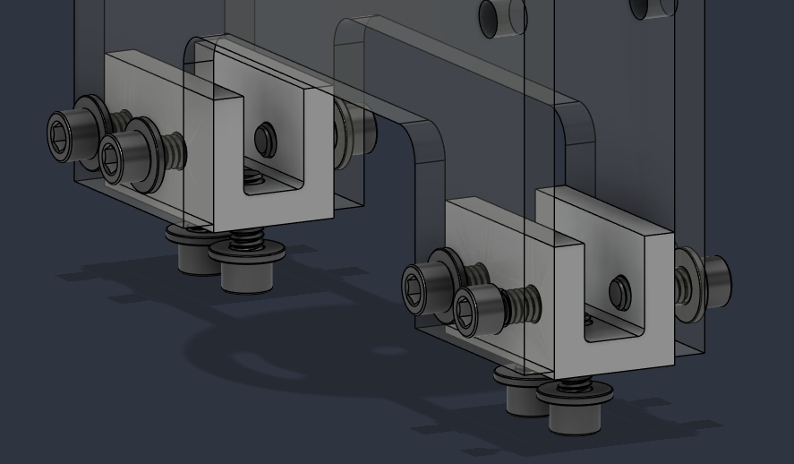
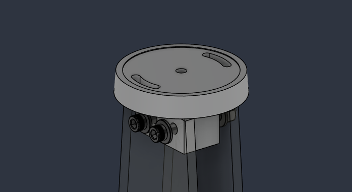

FEMAP / NASTRAN · Modal analysis · Random vibration
Sounding Rocket Avionics Bay
Avionics Structures Lead · CU Sounding Rocket Laboratory
I lead structural development of the avionics bay and use modal and random-vibration analysis of the board sleds to evaluate response and guide mounting decisions within the fixed nosecone arrangement.

Fixed geometry, response-driven placement
The sleds must remain in their existing nosecone locations. I ran modal and random-vibration analyses to understand how much response the sleds would experience and identify lower-response regions to inform mounting locations. No numerical response values or modal plots are presented here because those analysis exports are not available.
Sled mounting architecture
The concept review uses G10 fiberglass sleds and a bulkhead, with aluminum blocks supporting the sled bases. The mounting interfaces must accommodate the boards and allow assembly within the nosecone envelope.

Upper restraint and isolation
The review proposes a metal top retainer surrounded by a rubber strip to constrain the sleds and reduce direct coupling to nosecone vibration. The geometry illustrates the intended support arrangement; it does not establish measured isolation performance.

Technical leadership
I help new members learn mechanical design and CAD modeling. I am also teaching a new team member about the vibration and shock environments that govern the avionics-bay design, connecting the environmental loads to the structural-analysis work.
Current status
Concept Design Review and the sled modal/random-response work have been completed. Full vehicle structural verification remains pending finalized vehicle loads and boundary conditions. The next stage is to carry the finalized environments into the remaining structural sizing and verification.